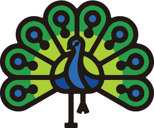
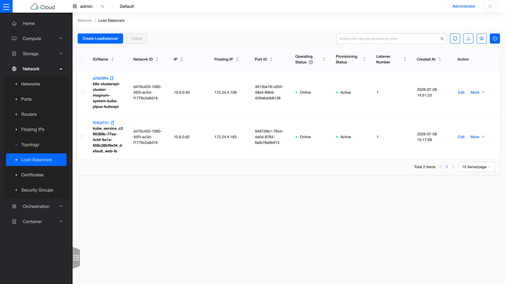

Sprint 3 / Day 4: Octavia LBaaS(Sprint 1 未完成項 #2)¶
課程定位:部署 Octavia 並手動走完 LB 全流程(LB → listener → pool → member → health monitor → VIP FIP)。 前一次嘗試在這一步直接出局:官方 charm 當時在主流架構上根本沒有發佈可用版本,想裝都裝不了。Kolla 這邊 Octavia 是一等公民,今天把它完整部起來。
你在課程的哪裡
- 前兩天:你已能開 VM(Day 2)、掛硬碟(Day 3)。
- 今天:開兩台 web VM,在前面放一台負載平衡器(Load Balancer),讓流量自動分給兩台。
- 今天之後:Day 8 在 Kubernetes 裡宣告
Service type=LoadBalancer時,自動生出來的 LB 就是今天這套 Octavia。
第一次接觸負載平衡?先讀這段¶

負載平衡器(LB)就是餐廳門口的帶位員:客人(請求)一律先到門口,帶位員看哪桌有空就帶去哪桌(後端伺服器),某桌收掉了(伺服器掛了)就不再帶人過去。好處:後端可以隨時加桌/收桌,客人永遠只需要記得門口在哪(一個固定的 IP)。AWS 對應:ELB/ALB。
Octavia 的特別之處:LB 是「一台幫你養的 VM」¶
多數人以為 LB 是什麼神祕硬體——在 Octavia 的預設模式裡,LB 就是一台自動幫你開好、裡面跑著 haproxy 的小 VM,叫 amphora(雙耳瓶,取「承載流量的容器」之意)。Octavia 負責:自動開這台 VM、把 haproxy 設定推進去、監控它的心跳、掛了就自動砍掉重開一台。
LB 的物件模型:四層積木¶
建一個能用的 LB 要疊四塊積木,每塊都有明確分工:
flowchart TB
C["client(請求)"] --> FIP["floating IP"]
FIP --> LB["loadbalancer<br/>(VIP:LB 的固定門牌)"]
LB --> LIS["listener<br/>(聽哪個 port?例:HTTP :80)"]
LIS --> P["pool<br/>(後端伺服器群 + 分配演算法)"]
HM["health monitor<br/>(定期戳後端,活著才派流量)"] -.->|監控| P
P --> M1["member: vm-web1"]
P --> M2["member: vm-web2"]| 積木 | 白話 |
|---|---|
| loadbalancer | 帶位員本人,持有一個固定的 VIP(虛擬 IP) |
| listener | 「我聽 80 port 的 HTTP」——一個 LB 可以有多個 listener |
| pool + member | 後端名單 + 分法(round-robin = 輪流帶位) |
| health monitor | 每 5 秒戳一次後端,沒回應的踢出名單 |
今天的驗收很直觀:對 LB 的 IP curl 六次,回應在 web1/web2 之間完美交替,就證明整條鏈通了。
原理與架構¶
1. Amphora 模型:LB 是「一台幫你養的 VM」¶
flowchart TB
subgraph control["控制面(Octavia 的服務)"]
direction LR
CLI["openstack CLI"] --> API["octavia-api"] --> W["octavia-worker"]
HM["health-manager<br/>(失聯就砍掉重建)"] ~~~ HK["housekeeping<br/>(清孤兒、輪替憑證)"]
end
W ==>|"請 Nova 開一台 VM"| AMP["amphora VM(LB 本體,裡面跑 haproxy)"]
AMP -.->|"UDP 5555 心跳回報"| HM
subgraph data["資料面(租戶流量,流過 amphora 內的 haproxy)"]
direction LR
T["使用者流量"] --> VIP["VIP"] --> HAP["haproxy"] --> MB["你的後端 members"]
end
AMP --- data- worker:收到 LB 需求 → 叫 Nova 開 amphora VM、叫 Neutron 插 VIP port、把 haproxy 設定推進去
- health-manager:收 amphora 心跳,失聯就 failover(砍掉重開一台)
- housekeeping:清理孤兒資源、憑證輪替
- LB 的資料面 = amphora VM 裡的 haproxy;control plane 掛了,現有 LB 照常轉發
2. mTLS dual CA(kolla-ansible octavia-certificates)¶
controller ↔ amphora-agent(:9443)雙向驗證:
- server_ca:簽 amphora 端的 server 憑證(controller 驗 amphora)
- client_ca:簽 controller 端的 client 憑證(amphora 驗 controller)
兩個 CA 分開 = 偷到 amphora image 也偽造不了 controller 身分。
3. lb-mgmt-net:tenant 模式的 o-hm0 魔術(本日最重要的架構點)¶
Octavia 管理面需要一條 controller ↔ amphora 的網路。兩種模式:
| provider 模式(kolla 預設) | tenant 模式(本 lab 採用) | |
|---|---|---|
| lb-mgmt-net | 實體 VLAN/flat,host 介面直接在上面 | 普通 Geneve tenant 網路 |
| controller 怎麼接進去 | host 網卡本來就在該 L2 | kolla 建一個 neutron port,然後 ovs-vsctl add-port br-int o-hm0 -- set Interface o-hm0 external-ids:iface-id=<port_id> —— 把 host 假扮成一個 VM port 插進 overlay |
| 適用 | 有真實網路可用的生產環境 | 單機 lab / 無 VLAN 環境(如 Azure) |
設計變更紀錄:原計畫仿 ext-net 做第二組 dummy1/br-ex2/physnet2(provider 模式)。動手前直接讀裝好的 role 原始碼(roles/octavia/tasks/hm-interface.yml)發現 tenant 模式的 o-hm0 手法與 OVN 相容(ovn-controller 認 iface-id 就綁 port),整條手術省掉。教訓:查「這版怎麼做」永遠以 ~/kolla-venv/share/kolla-ansible/ansible/roles/ 的原始碼為準,部落格文章常是舊版做法。
4. Amphora image:OSISM 預建 vs DIB 自建¶
官方做法是 diskimage-builder 自建(~15 分、需 debootstrap)。OSISM 每月發布預建 image,有對應 2025.1 的版本,lab 直接用;生產環境建議自建(控制內容物與更新節奏)。
5. Bonus:OVN provider driver¶
Epoxy 的 kolla 在 neutron_plugin_agent == 'ovn' 時自動註冊第二個 LB provider:ovn。它把 L4 LB 規則直接寫進 OVN 邏輯流表,不開 amphora VM——沒有 L7、沒有 health monitor 完整功能,但零額外資源。課程對照:amphora = 功能全、成本高;ovn = 陽春、免費。
步驟¶
1. 前置¶
# amphora image(背景下載)
curl -sL -o /tmp/amphora.qcow2 \
https://nbg1.your-objectstorage.com/osism/openstack-octavia-amphora-image/octavia-amphora-haproxy-2025.1.qcow2
# globals.yml
enable_octavia: "yes"
octavia_network_type: "tenant"
octavia_auto_configure: yes # kolla 自建 lb-mgmt-net/router/flavor/SG/keypair
# 憑證(注意:這個子指令也要 -i,否則找預設 inventory 路徑會出錯)
kolla-ansible octavia-certificates -i ~/all-in-one
2. Deploy¶
3. 上傳 amphora image + LB lab¶
# image 上傳到 octavia.conf 的 amp_image_owner_id 那個 project,tag 必須是 amphora
AMP_PROJECT=$(sudo docker exec octavia_worker grep amp_image_owner_id /etc/octavia/octavia.conf | awk '{print $3}')
source /etc/kolla/admin-openrc.sh
openstack image create amphora-x64-haproxy --file /tmp/amphora.qcow2 \
--disk-format qcow2 --container-format bare --private --tag amphora \
--project $AMP_PROJECT --property hw_architecture=x86_64 --property hw_rng_model=virtio
pip install python-octaviaclient
# 兩台 web member(user-data 起 http server 回 hostname)
source ~/demo-openrc.sh
openstack security group rule create --proto tcp --dst-port 80 default
openstack server create --flavor m1.small --image ubuntu-24.04 --network net1 \
--key-name oslab --config-drive True --user-data /tmp/web-userdata.sh --wait vm-web1 # web2 同
# LB 全流程(第一次 create 會觸發 amphora VM 開機,2-4 分)
openstack loadbalancer create --name lb2 --vip-subnet-id subnet1 --wait
openstack loadbalancer listener create --name listener1 --protocol HTTP --protocol-port 80 --wait lb2
openstack loadbalancer pool create --name pool1 --lb-algorithm ROUND_ROBIN --listener listener1 --protocol HTTP --wait
openstack loadbalancer member create --subnet-id subnet1 --address 10.10.10.124 --protocol-port 80 --wait pool1
openstack loadbalancer member create --subnet-id subnet1 --address 10.10.10.188 --protocol-port 80 --wait pool1
openstack loadbalancer healthmonitor create --name hm1 --delay 5 --max-retries 3 --timeout 3 --type HTTP --url-path / --wait pool1
# VIP 掛 FIP → host 直接打
VIPPORT=$(openstack loadbalancer show lb2 -c vip_port_id -f value)
LBFIP=$(openstack floating ip create ext-net -c floating_ip_address -f value)
openstack floating ip set --port $VIPPORT $LBFIP
for i in $(seq 6); do curl -s http://$LBFIP/; done # web1/web2 交替 = round robin
4. Bonus:OVN provider 對照組¶
openstack loadbalancer create --name lb-ovn --provider ovn --vip-subnet-id subnet1 --wait
openstack loadbalancer listener create --name lis-ovn --protocol TCP --protocol-port 80 --wait lb-ovn
openstack loadbalancer pool create --name pool-ovn --lb-algorithm SOURCE_IP_PORT --listener lis-ovn --protocol TCP --wait
openstack loadbalancer member create --subnet-id subnet1 --address 10.10.10.124 --protocol-port 80 --wait pool-ovn
# 特徵:L4 only、SOURCE_IP_PORT、無 amphora VM、規則直接進 OVN 流表
驗收 checkpoint¶
逐項驗證,全部符合判準才算完成今天。「本課環境的結果」欄是我們實測的參考值——你的 IP、耗時等數字會不同,但判準必須成立:
| 驗證 | 判準 | 本課環境的結果 |
|---|---|---|
| octavia 容器 | api/worker/health-manager/housekeeping/driver-agent 全 Up | 符合 |
| o-hm0 | 從 lb-mgmt-subnet 拿到 DHCP IP | 10.1.0.29/24(OVN 原生 DHCP) |
| auto-configure | lb-mgmt-net/router/flavor/SG 自動建立,octavia.conf 填好 id | 符合 |
| amphora | ALLOCATED / STANDALONE,mgmt IP 可達 | 10.1.0.85 |
| lb2(amphora provider) | ACTIVE/ONLINE,members 全 ONLINE | 符合 |
| round robin | curl FIP 交替回 web1/web2 | 6/6 完美交替 |
| lb-ovn(ovn provider) | ACTIVE/ONLINE,tenant 內可連通 | 無 amphora,零額外 VM |
| 對照前一次嘗試 | Sprint 1 卡死這一步的 charm 斷代問題,Kolla 路線不存在 | 順利部署(當時的細節見前兩次嘗試) |
地雷記錄¶
地雷 1:octavia-certificates 不吃預設 inventory¶
kolla-ansible octavia-certificates 單獨跑會找 /etc/kolla/ansible/inventory/all-in-one 報 Path does not exist —— 跟 deploy 一樣要 -i ~/all-in-one。
地雷 2:Ubuntu 24.04 沒有 dhclient → octavia-interface.service 起不來(solutions 級)¶
deploy 死在 Restart octavia-interface.service,systemctl status 顯示 dhclient ... status=203/EXEC(執行檔不存在)。Noble cloud image 已移除 isc-dhcp-client(上游棄案),kolla 的 unit 還寫死 /sbin/dhclient。修:apt install isc-dhcp-client → systemctl reset-failed && systemctl start octavia-interface → 補跑 deploy --tags octavia。完整記錄見排錯手冊:octavia-interface 的 dhclient 問題。
地雷 3:amphora driver 需要 Redis jobboard,kolla 不會自動開(solutions 級)¶
LB 卡 PENDING_CREATE、amphora 根本沒開機,worker log:MasterNotFoundError: No master found for 'kolla' + Error 111 connecting to 127.0.0.1:6379。Epoxy 的 amphora provider 走 taskflow jobboard(Redis sentinel),但 enable_redis 預設 no 且 octavia 不會幫你啟動。修:enable_redis: "yes" → deploy --tags redis,octavia。完整記錄見排錯手冊:amphora 的 Redis jobboard 問題。
地雷 4:octavia-openrc.sh 沒有生成¶
文件說會有 /etc/kolla/octavia-openrc.sh,實際沒出現。不影響:image 上傳改用 admin + --project <amp_image_owner_id>(從 octavia.conf 讀,auto-configure 已填好)。
地雷 5:卡在 PENDING_* 的 LB 無法刪除(擴展知識)¶
Redis 壞掉期間建立的 lb1 永遠停在 PENDING_CREATE,delete 回 409(PENDING 狀態 immutable,而 job 從未進 queue,永遠不會有人來改狀態)。社群公認處置(lab 限定,生產環境先開 ticket):DB 把 provisioning_status 改 ERROR → loadbalancer delete --cascade。這是本 lab 唯一一次手改 DB,原因:Octavia 沒有提供 stuck-PENDING 的官方重置工具。
從儀表板看成果¶

Load Balancer 列表(Skyline 檢視):兩顆 LB 都是 Day 8 的 K8s 自動建的——kubeapi 是 cluster API 的入口,web-lb 是 Service type=LoadBalancer 的產物。Operating Status 的綠色 Online 來自 health monitor 的持續檢查,正是今天教的機制。
下一步(Day 5)¶
Barbican(Magnum 的憑證倉庫)+ Heat 複習(白撿的,Day 1 已部)。